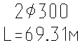

Команда: draw_text_long_and_diam_be_2_points
Команда: draw_text_long_and_diam_be_2_pointsПодписывает диаметр (запрашивается у пользователя) и расстояние
Команда: draw_text_long_and_diam_be_2_points
 Введи верхнюю строку:
Введи верхнюю строку:
 вводит текст который будет в верхней строке, для отображения диаметра используется комбинация символов %%c
вводит текст который будет в верхней строке, для отображения диаметра используется комбинация символов %%c
Укажи первую точку:
указывает первую точку для определения длинны трубы
Укажи вторую точку:
указывает вторую точку для определения длинны трубы
Пример результата работы программы
